Розробка бізнес вимог, функціональних та нефункціональних вимог до програмної системи, обговорення атрибутів якості
Мета роботи
Отримати навички побудови концептуальної моделі проектованої інформаційної системи у вигляді специфікації вимог, а також опису варіантів використання.
Методичні рекомендації до самостійної роботи студентів
Залежно від формату, джерела і загальних характеристик, вимоги можуть бути розділені на різні типи. Декілька типів вимог, що найчастіше використовуються в проектах:
- потреби зацікавленої особи : вимога від зацікавленої особи;
- функціональна особливість: функціональність, що надається системою, зазвичай формулюється бізнес-аналітиком; призначення особливості - задовольнити потреби замовника;
- сценарій використання (use case): опис поведінки системи в термінах послідовності дій;
- додаткова вимога: інша вимога (зазвичай нефункціональне), яка не може бути охоплена сценаріями використання;
- тестові сценарії( test cases): специфікація тестових початкових даних, умов виконання і очікуваних результатів;
- сценарій (алгоритм, scenario): особлива послідовність дій; певний шлях за сценарієм використання.
Ці типи вимог можуть бути представлені у вигляді піраміди, як показано на рис 1.1.
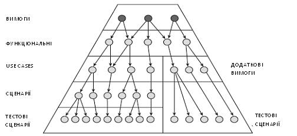
Рисунок 1.1- Піраміда вимог
На верхньому рівні розташовуються потреби зацікавленої особи. На подальших рівнях знаходяться функціональні особливості, сценарії використання і додаткові вимоги. Досить часто на різних рівнях цих вимог можуть бути з'ясовані деталі різного рівня. Чим нижче рівень, тим детальніше описується вимога. Наприклад, потреба може бути наступною: «Дані мають бути незмінними». Функціональна особливість цієї вимоги буде: «Система повинна використати реляційну базу даних». На рівні додаткових вимог, вимога ще точніша : «Система повинна використати базу даних Oracle 9i». Чим далі вниз, тим детальнішою стає вимога. Один з кращих способів управління вимогами - узагальнювати вимоги, принаймні, на двох різних рівнях. Наприклад, документ Концепція(«Vision») містить високорівневі вимоги (особливості), а нижчі рівні піраміди представляють вимоги на детальнішому рівні.
Головна відмінність між потребами і функціональними особливостями - в джерелі вимог. Потреби поступають від зацікавлених осіб, а функціональні особливості формулюються бізнес-аналітиками.
Роль тестових сценаріїв - перевірити, чи коректно були реалізовані сценарії використання і додаткові вимоги. Алгоритми допомагають отримати сценарії використання з тестових сценаріїв, а також сприяють проектуванню і реалізації певних шляхів через сценарії використання.
Трасування - це спосіб представлення стосунків між вимогами різного рівня в системі. Вона допомагає визначити джерело будь-якої вимоги. Рис 1.1. показує, як вимоги переходять від самого верхнього рівня до нижнього. Кожна потреба зазвичай відповідає декільком функціональним особливостям. Звичайне це відношення «багато-до-багатьох», оскільки одна потреба може трасуватися до багатьох функціональних особливостей, але з декількох потреб може бути отримана одна функціональна особливість. Одна потреба, що відповідає одній функціональній особливості, - це також загальний випадок. Функціональні особливості відповідають сценаріям використання відносно «багато-до-багатьох». Функціональні особливості також відповідають додатковим вимогам відносно «багато-до-багатьох».
Кожен сценарій використання відповідає одному або більше сценарію (алгоритму), таким чином, їх тип стосунків - «один-до-багатьох». Сценарії (алгоритми) відповідають тестовим сценаріям відносно «один-до-багатьох».
Трасування грає декілька важливих ролей:
- підтвердження, що реалізація задовольняє усім вимогам: усе, що вимагав замовник, було реалізовано;
- підтвердження, що додаток робить тільки те, що було замовлено : не реалізовувати те, що замовник ніколи не просив;
- аналіз дії : які елементи торкнуться при додаванні нових вимог або зміні поточних;
- допомога в управлінні змінами: коли деякі вимоги змінюються, ми хочемо знати, які тестові сценарії мають бути змінені, щоб протестувати цю зміну.
Елемент трасування - це елемент проекту, який має бути отриманий (трасує) з іншого елементу. В термінах RequisitePro під ним розуміється усе, що належить якому-небудь типу вимог. Приклади типів вимог в RequisitePro: потреби зацікавлених осіб, функціональні особливості, сценарії використання, дійові особи і терміни довідника. У RequisitePro є дуже зручний спосіб відображення трасування (зв'язки) за допомогою спеціальних представлень (views).
Вимога повинна задовольняти декільком критеріям для того, щоб вважатися «хорошою вимогою». Хороша вимога повинна мати наступні характеристики:
- недвозначність;
- тестуємість (можливість перевірки);
- ясність (стислість, простота, точність);
- коректність;
- зрозумілість;
- правдоподібність (реальність, здійснимість);
- незалежність;
- елементарність;
- необхідність;
- незалежність від реалізації(абстрактність).
Окрім цих критеріїв для окремих вимог, для набору вимог застосовуються три критерії. Вимоги мають бути:
- постійними;
- небагатослівними;
- завершеними.
Найпростіший опис процесу управління вимогами містить наступні основні пункти:
- формування плану управління вимогами;
- збір вимог;
- розробка документу концепції (vision);
- створення сценаріїв використання (use cases);
- додаткова специфікація;
- створення тестових сценаріїв (test cases) з сценаріїв використання (use cases);
- створення тестових сценаріїв (test cases) з додаткової специфікації;
- проектування системи.
Перший крок (план управління вимогами) визначає піраміду вимог. На кожному з подальших семи кроків будується один елемент піраміди табл.1.1. описує, які типи вимог і яка документація створюються на кожному кроці.
Управління вимогами - це інтерактивний процес. На типовій ітерації передбачається повне проходження по піраміді. На будь-якій ітерації ми можемо повернутися назад на декілька кроків і повторити дії.
Наприклад, в процесі створення тестових сценаріїв, ми можемо виявити, що відсутній деяка інформація, і нам треба отримати її від зацікавленої особи.
Таблиця 1.1- Вимоги і документи
Крок | Тип Вимог | Документи |
Збір вимог | Потреби зацікавленої особи | Запити зацікавленої особи |
Розробка документу Концепції (Vision) | Функціональні особливості | Концепція |
Створення сценаріїв використання (Use cases) | Сценарії використання, алгоритми | Специфікація Сценаріїв Використання |
Додаткова специфікація | Додаткові вимоги | Додаткова специфікація |
Створення тестових сценаріїв (test cases) з сценаріїв використання (use cases) | Тестові сценарії | Тестові сценарії |
Створення тестових сценаріїв (test cases) з додаткової специфікації | Тестові сценарії | Тестові сценарії |
Проектування системи | Діаграми класів, діаграми взаємодій | UML- діаграми |
Таким чином, ми повертаємося на крок збору вимог. Для забезпечення цілісності моделі, важливо оновлювати усі відповідні вимоги. На початкових ітераціях акцент робиться на перших декількох кроках(у вершині піраміди), а потім, на подальших ітераціях, більше часу проводиться на нижчих рівнях піраміди.
IBM Rational RequisitePro - це інструмент, який сприяє процесу управління вимогами. Він дозволяє вводити, оновлювати, відстежувати і переглядати вимоги упродовж усього життєвого циклу проекту. RequisitePro об'єднує Microsoft Word (знайоме середовище для обробки документів) і потужну інфраструктуру бази даних. Шляхом комбінування підходу, орієнтованого на документи і підходу, орієнтованого на базу даних, RequisitePro надає потужну і зручну у використанні систему для управління вимогами. Навігація між документами і базою даних дуже легка і інтуїтивна. Ви можете створювати, організовувати, відстежувати вимоги і призначати їм пріоритети. Цей інструмент забезпечує детальне виготовлення документів, типів вимог і атрибутів. Управління змінами підтримується шляхом відстежування зв'язків між вимогами.
Інтерфейс RequisitePro складається з наступних основних частин, як показано на рис 1.2:
- explorer window (вікно провідника) ліворуч;
- Views (область представлень) справа;
- Menus (меню) і toolbars(панелі інструментів) вгорі.
Коли працюєте з документами, в окремому вікні відкривається робочий простір Word.
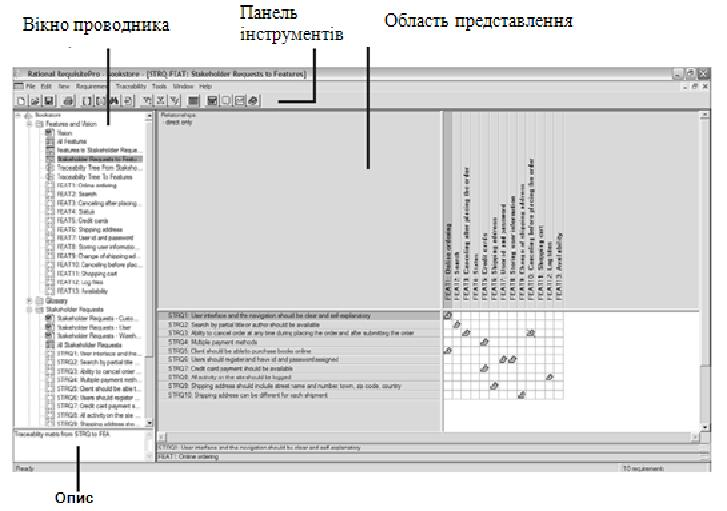
Рисунок 1.2 - Основні частини інтерфейсу RequisitePro
Explorer(Провідник)
Explorer(Провідник) - це головне вікно навігації, яке відображає компоненти проекту у вигляді дерева(див. рис 1.2). Слово Explorer (Провідник) відноситься тільки до Провідника RequisitePro.
Документи, вимоги і представлення об'єднані в теки. У шаблоні Use Case (Сценаріїв Використання) за умовчанням знаходяться наступні теки:
- features and vision (функціональні особливості і концепція);
- glossary (довідник);
- stakeholder requests (запити зацікавленої особи);
- supplementary requirements (додаткові вимоги);
- use cases (сценарії використання).
Ви можете додати будь-яку кількість тек. Теки відображаються в Провіднику як каталоги. Теки можуть містити тільки документи, представлення, вимоги і інші теки.
Елементи проекту представлені в Провіднику спеціальними іконками, що вказують на тип елементу :
- документи;
- представлення;
- вимоги.
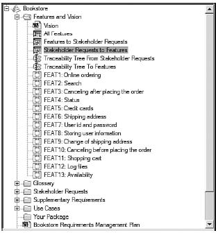
Рисунок 1.3- RequisitePro Explorer(Провідник)
У Провіднику Ви можете здійснювати основні операції (створення, перегляд, оновлення, видалення) над представленнями, вимогами і документами. Ви можете змінити структуру елементів, просто перетягуючи їх між теками.
Провідник забезпечує легкий доступ до елементів проекту. Подвійним клацанням мишки на документі, Ви відкриваєте його в робочому просторі Word. Подвійним клацанням мишки на вимозі, Ви переходите до вимоги в документі, де воно визначене. Подвійним клацанням мишки на представленні відкриває його у вікні View (Області Представлень). Замість подвійного клацання на представленні або документі, Ви можете також натиснути правою кнопкою мишки і вибрати Open (Відкрити). Коли Ви виділяєте елемент, його опис з'являється у вікні під Провідником (див. лівий нижній кут на рис 1.2).
Views (Область Представлень). Область Представлень - це область для аналізу інформації за вимогами. Представлення відображає атрибути вимог або відношення між вимогами. Воно може відображатися у вигляді матриці або дерева. У області представлень Ви також можете створювати і оновлювати вимоги, встановлювати стосунки між ними (наприклад, стосунки ієрархії і трасування), сортувати і фільтрувати вимоги, а також просити статус проекту.
Існує три типи представлень :
- attribute matrix (матриця атрибутів) - відображає вимоги певного типу і їх атрибути, як показано на рис 1.4.
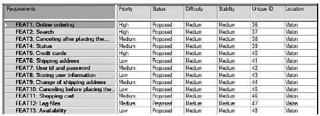
Рисунок 1.4- Attribute Matrix(Матриця Атрибутів).
- traceability matrix (матриця трасування) - відображає відношення між двома типами вимог у формі матриці, як показано на рис. 1.5.
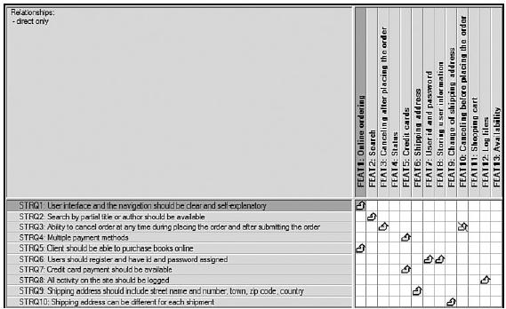
Рисунок 1.5- Traceability Matrix (Матриця Трасування)
- traceability tree (дерево трасування) відображає увесь ланцюг трасування(зв'язки) у вигляді дерева.
Рисунок 1.6- Traceability Tree (Дерево Трасування)
Матриця Атрибутів може бути використана для виконання наступних завдань :
- перегляд вимог певного типу;
- додавання, оновлення і видалення вимог;
- налаштування атрибутів вимог;
- запит вимог, що задовольняють певним критеріям(фільтрація і сортування вимог на підставі їх атрибутів);
- пошук вимог в документах.
У додаванні до цих завдань, матриця трасування може бути використана для наступного:
- установка і аналіз трасування(зв'язки);
- управління змінами з використанням підозрілого трасування(зв'язки);
- аналіз наслідків.
Дерево трасування використовується в основному для відображення і аналізу ланцюжка трасування(зв'язки).
У кожному уявленні Ви можете робити наступне:
- сортувати і фільтрувати вимоги;
- зберігати запити, за допомогою яких формувалося представлення;
- експортувати інформацію представлення в інші формати;
- друкувати представлення.
Визначаючи запит, Ви можете фільтрувати (обмежувати інформацію, що відображається) і сортувати (упорядковувати інформацію). Ви можете обробляти за допомогою запитів наступні вимоги:
- рядки в матриці атрибутів;
- рядки і стовпці в матриці трасування;
- вимоги в кореневому каталозі дерева трасування.
Деякі приклади запитів, які можуть бути відображені в представленнях :
- показувати усі сценарії використання, які ще не підтверджені, і сортувати їх по пріоритету;
- показати усі запити зацікавленої особи, які трасуються особливо;
- показати усі функціональні особливості, які були реалізовані на цій ітерації;
- показати усі функціональні особливості з найвищим пріоритетом, які витягнуті з додаткових вимог, призначених певним розробникам;
- показати ланцюжок трасування (зв'язків) для усіх запитів зацікавленої особи, які були отримані від кінцевих користувачів.
- Toolbar (панель інструментів).
Панель інструментів RequisitePro, показана на рис.1.6, забезпечує швидкий доступ до інформації проекту і головних операцій. Повна функціональність панелі інструментів і опції доступні з пунктів меню, описаних в подальших главах.
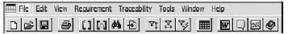
Рисунок 1.6- RequisitePro Toolbar(панель інструментів)
Робочий простір Word - це середовище, в якому Ви створюєте, відображаєте і змінюєте документи. Вона відкривається у вигляді вікна Microsoft Word усередині RequisitePro і надає ту ж функціональність, що і Microsoft Word. Окрім цього, панель інструментів RequisitePro дає можливість здійснювати додаткові операції над документами і вимогами RequisitePro. Панель інструментів можна вільно пересувати, як показано на рис.1.7, або приєднати до інших панелей інструментів вверху вікна. Рисунок 1.8. показує іконки на цій панелі інструментів. Ви можете імпортувати існуючі документи Word в RequisitePro або створювати документи в середовищі RequisitePro на основі існуючих шаблонів. Кожен документ позначається іконкою Word в Провіднику RequisitePro. Подвійне клацання мишки на іконці відкриє відповідний документ.
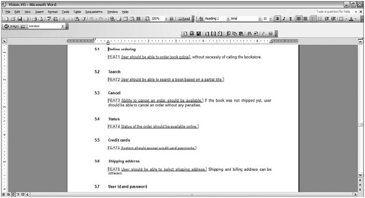
Рисунок 1.7 - Робочий простір Word
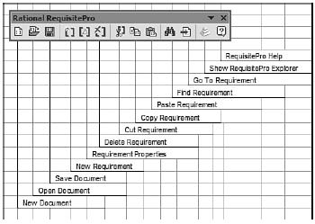
Рисунок 1.8 - Панель інструментів RequisitePro в робочому просторі Word
Багато стандартних типів документів можуть бути створені в RequisitePro. Ви також можете створити свій власний тип документів, специфічний для Вашого проекту або компанії (і зв'язати його з шаблонами). Декілька прикладів найчастіше використовуваних документів :
- концепція (vision) : містить повний опис системи і функціональних особливостей(один на проект).;
- сценарій використання (use case) : визначає поведінку системи в термінах послідовності дій(декілька на проект);
- додаткова специфікація (supplementary specification) : функціональні вимоги, не пов'язані з сценаріями використання або нефункціональні вимоги (один на проект);
- довідник (glossary): описує усі терміни(один на проект), що відносяться до проекту.
Кожен документ належить певному типу документів. Тип документу визначає шаблон, вживаний в документі. Цей шаблон визначає стандартне форматування, зміст, пункти за умовчанням і заголовки. Усі документи такого ж типу мають однакове розширення файлу. Вони не мають використовуваних в Microsoft Word розширень, так що вони можуть бути змінені тільки з RequisitePro.
Найбільш загальні типи документів є за умовчанням. Створення нового типу документів, як і нових шаблонів, не складає труднощів.
RequisitePro зберігає вимоги у базі даних проекту. Вимоги можуть зберігатися або тільки у базі даних, або одночасно і в проектній документації, і у базі даних. Коли Ви створюєте вимогу в документі, воно стає динамічним посиланням на його представлення у базі даних.
У кожної вимоги є відповідні атрибути. Вони визначають властивості вимог, такі як Priority(Пріоритет), Status(Статус), Difficulty(Складність), Risk(Ризик) і Origin(Джерело). Атрибути надають інформацію для управління вимогами. Вони можуть використовуватися для планування, комунікацій і моніторингу проектної діяльності. Зовсім не складно здійснювати як налаштування значень атрибутів, встановлених за умовчанням, так і створювати власні атрибути.
Початкові вимоги поступають в RequisitePro із вже передвстановленим за умовчанням набором атрибутів. Цей набір може мінятися залежно від того, яку версію інструменту Ви використовуєте. Табл.1.2. представляє включені в шаблон Use Cases (Сценаріїв Використання) атрибути і значення для наступних типів вимог :
- Features(FEAT) - Функціональні особливості;
- Supplementary requirements(SUPL) - Додаткові вимоги;
- Use cases(UC) - Сценарії використання;
- Stakeholder requests(STRQ) - Запити зацікавлених осіб.
Для відстежування атрибутів вимог і трасування (встановлення зв'язку), не обов'язково зберігати вимоги в документах. Вони можуть бути розташовані у базі даних. Проте їх наявність в документах дає деякі переваги:
- легкий доступ до вимог для членів команди, що не має доступу до requisitepro;
- можливість візуально групувати і структурувати вимоги;
- представлення вимог у більше читабельній формі;
- простота додавання коментарів і пояснень.
Альтернативою управлінню вимог в документах являється використання звітів. Наприклад, шаблони Use Case Specification SoDA (Специфікації Сценаріїв Використання) можуть бути створені так, що коли треба об'єднати сценарії використання, може бути згенерований звіт. Цей звіт матиме таку ж структуру, що і шаблон Use Case Specification RequisitePro.
Наступні типи вимог зазвичай зберігаються не лише у базі даних, але і у відповідних документах:
- із-за своєї наочної природи, сценарії використання мають бути пов'язані з документами - один документ на окремий сценарій використання (use case specification - специфікація сценаріїв використання);
- функціональні особливості включені в документ концепції (vision);
- додаткові вимоги фіксуються в додатковій специфікації (supplementary specification).
Вимоги типу «потреби зацікавлених осіб» зазвичай включаються в документи Запитів Зацікавлених Осіб (Stakeholder Requests). Але окрім цього, існує ще три основні підходи до оформлення потреб. Вимоги цього типу можуть зберігатися:
- документах запитів зацікавлених осіб: якщо
1) сі потреби пов'язані з певною зацікавленою особою;
2) снує місце для додаткових коментарів і для усіх відповідей зацікавлених осіб;
3) не складає труднощів дати увесь документ зацікавленій особі для розгляду.
Але збільшується кількість документів, які вимагають постійного оновлення;
- тільки у базі даних, що зменшує кількість документів. Але це найменш читабельна форма, особливо якщо ми хочемо вислухати думку зацікавленої особи;
- у документі концепції, що зменшує кількість документів, але концепція стає документом, який містить вимоги як з області проблем (STRQ), так і з області рішень (FEAT).
Кожен проект знаходиться в окремому каталозі. Для створення проекту RequisitePro виберіть File>New>Project (Файл>Новий>Проект). З'явиться діалогове вікно з шаблонами проекту, як показано на рис 1.9.
При створенні, Ви можете визначити новий проект на основі:
- порожнього шаблону;
- одного з трьох включених в requisitepro шаблонів : use case (сценаріїв використання), traditional (традиційний) або composite (комплексний);
- шаблону, створеного з існуючого проекту;
- з базової версії.
Коли створюєте проект на основі шаблону, то тип документів, тип вимог, їх атрибути, а також інформація по безпеці копіюються з шаблону в новий проект.
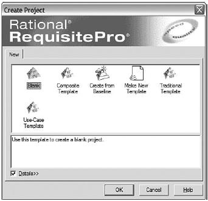
Рисунок 1.9 - Доступні в RequisitePro шаблони проекту
Додаткові документи і типи вимог можуть бути додані пізніше. Використання шаблону може заощадити час і позбавити від зайвих зусиль, оскільки шаблон вже містить більшість потрібних Вам документів. У RequisitePro доступні наступні типи шаблонів :
- use case (шаблон сценаріїв використання): зручний для проектів, де функціональні вимоги описані в сценаріях використання;
- traditional (традиційний): зручний для проектів, де використовуються традиційні (декларативні) вимоги замість сценаріїв використання;
- composite (комплексний): об'єднує сценарії використання і традиційні підходи;
- Blank (порожній): зручний, якщо у вашому проекті є особливий набір документів і типів вимог;
- make new: зручно, якщо ви хочете використати цю ж структуру в подальших проектах;
- create from baseline (створення з базової версії): зручно, якщо у вас є clearquest, інтегрований з requisitepro.
Табл 1.2 показує, які типи документів і вимог включені в шаблони.
У разі комплексного шаблону, документ специфікації вимог до програмного забезпечення (SRS - software requirement specification) зазвичай називається вдосконаленою специфікацією вимог до програмного забезпечення (modern software requirement specification). окрім основного змісту документу SRS, в нім є опис моделі сценаріїв використання.
Ви можете вибрати проект зі списку (за умовчанням список містить все раніше використовувані проекти) або створити новий проект. Якщо Ви хочете відкрити існуючий проект, якого немає в списку, Ви повинні спочатку додати проект в список існуючих проектів натисненням на кнопку Add.
Додавання типу документу в проект. Кожен тип документу зазвичай пов'язаний з деякою моделлю - шаблоном Microsoft Word (.dot файл).
Таблиця 1.2 - Типи вимог і документів, включені в три головні шаблони
Документ | Тип вимог | Шаблон | ||
Традиційний | Сценарії використання | Комплексний | ||
План управління вимогами | Вимога плану управління вимогами | √ | √ | √ |
Запити зацікавленої особи | Запит зацікавленої особи | √ | √ | √ |
Концепція | Функціональна особливість | √ | √ | √ |
Довідник | Термін довідника | √ | √ | √ |
Специфікація вимог до програмного забезпечення(srs) | Вимога до програмного забезпечення | √ | √ | |
Специфікація сценаріїв використання | Сценарій використання | √ | √ | |
Додаткова специфікація | Додаткова вимога | √ | ||
Суть цієї моделі і є стартовою точкою при створенні нового документу. Модель включає формати, параметри сторінки і шрифти. Ви можете використати вже передвстановлені шаблони RequisitePro, або створити їх самі. Якщо Ви встановите модель в None, то при створенні нового документу цього типу відкриється порожній документ Microsoft Word.
Тип документів «Запити Зацікавленої Особи» включений в шаблон Use Case (Сценаріїв Використання).
Якщо Ви не упевнені, що Ваш проект включає тип документів «Запити Зацікавленої Особи», виконаєте наступні дії:
- виберіть проект в explorer (провіднику);
- виберіть file>properties (файл>властивості);
- виберіть закладку documents type (тип документів).
Якщо тип документів «Запити Зацікавленої Особи» знаходиться в списку, то Вам не треба додавати його. Проте якщо цей тип документу відсутній в проекті, наступні кроки допоможуть додати його:
- виберіть file>properties (файл>властивості), з'явиться діалогове вікно file properties (властивості проекту);
- виберіть закладку documents type (тип документів);
- натисніть add (додати), з'явиться діалогове вікно document type (тип документу), як показано на рис 1.10;
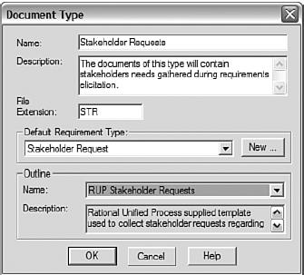
Рисунок 1.11 - Діалогове вікно Document Type (Тип Документу)
- введіть назву документу, опис і розширення файлу;
- у списку default requirement type (тип вимоги за умовчанням) виберіть «запити зацікавленої особи». якщо такого типу немає в списку, створіть його, натиснувши на кнопку new (новий), і заповнивши діалогове вікно;
- у списку outline name (назви моделей) виберіть rup stakeholder requests outline;
- натисніть ok, щоб закрити діалогове вікно document type (тип документу);
- натисніть ok, щоб закрити діалогове вікно project properties (властивості проекту).
Щоб створити документ Запитів Зацікавленої Особи (Stakeholder Requests) виконаєте наступні кроки:
- виберіть теку, де ви хотіли б створити документ. у шаблоні use case (сценаріїв використання), тека «stakeholders requests» («запити зацікавлених осіб») вже створена;
- виберіть file>new>document (файл>новий>документ) (чи натисніть правою кнопкою мишки на теці і виберіть new>document);
1) з'явиться діалогове вікно document properties(властивості документу), як показано на рис 1.11;
- у полі name (ім'я) введіть ім'я документу. якщо у вас тільки один документ в проекті, він може називатися просто «запити зацікавленої особи». якщо ви створюєте документ для кожної зацікавленої особи, включите в назву документу ім'я або тип зацікавленої особи, наприклад «користувач». якщо це комбінований документ для декількох зацікавлених осіб, до яких був застосований певний метод збору вимог, ви можете включити метод в назву документу, наприклад «запити зацікавленої особи-анкетування», або можете використати назву групи зацікавлених осіб, наприклад «запити зацікавленого особи -служба надання послуг»;
- у полі description (опис) введіть короткий опис документу;
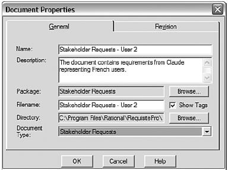
Рисунок 1.11 - Діалогове вікно Document Properties
- у полі filename (назва файлу) введіть назву файлу, яку Requisitepro використовуватиме при збереженні документу. воно може бути аналогічно назві документу або являтися тільки його абревіатурою;
- виберіть document type (тип документу) - stakeholder requests (запити зацікавленої особи);
- натисніть оки.
Новий створений документ з'явиться у вікні Microsoft Word, як показано на рис 1.12.
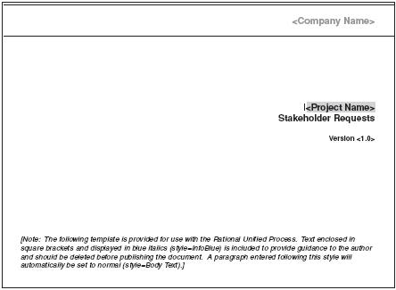
Рисунок 1.12 - Початкова сторінка документу Запитів Зацікавленої Особи (Stakeholder Requests)
RequisitePro управляє документом через робочий простір Microsoft Word. Ви можете змінювати текст в документі так само, як би Ви це робили із звичайним документом Microsoft Word. Деякі поля в шаблоні містять загальні назви як <Company Name> (Назва Компанії) чи <Project Name> (Назва Проекту). При виборі, фон у цих полів стає сірим. Вони мають бути замінені актуальними значеннями. Найбільш зручний спосіб їх поміняти - це відкрити діалогове вікно Properties (Властивості) (виберіть File>Properties (Файл>Властивості)) і ввести відповідні імена, як показано на рис 1.13.
Після того, як були встановлені властивості документу, Ви можете змінити поле в шаблоні шляхом приміщення курсора на поле і натиснення F9. Поле буде заповнено відповідним значенням з діалогового вікна Properties (Властивості), як показано на рис 1.15.
Документ, генерований RequisitePro за умовчанням, містить написаний синім курсивом текст інструкції. Він пояснює, що саме має бути написане в певному пункті документу. Замініть текст інструкції відповідною проектною інформацією.
Формат документу Запитів Зацікавленої Особи залежить від використовуваного при зборі вимог методу. Первинна версія документу містить сценарій інтерв'ю, використовуваний в попередньому пункті «Інтерв'ю». Проте, загальна структура документу може бути модифікована залежно від Ваших потреб.
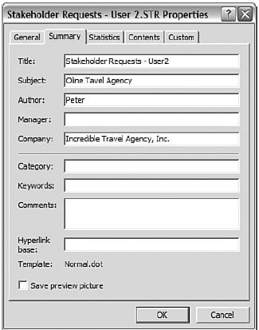
Рисунок 1.13 - Діалогове вікно Document Properties (Властивості Документу)
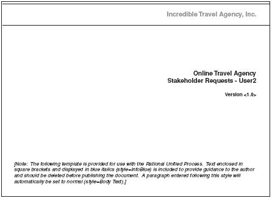
Рисунок 1.14 - Перша сторінка документу з відповідними полями, отриманими з діалогового вікна Document Properties (Властивості Документу)
Для створення вимог в документі Microsoft Word виконаєте наступні дії:
- виділіть текст, що описує вимогу, як показано на рис 1.15.
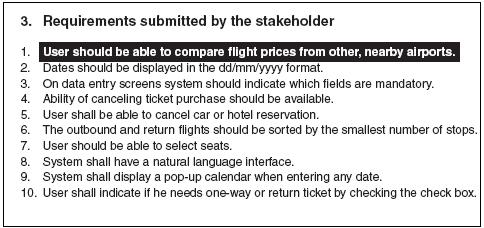
Рисунок 1.15 - Виділення тексту вимоги в документі
- виберіть requisitepro>requirement>new (вимога>нове), або натисніть праву кнопки мишки на тексті і виберіть Create Requirement (Створити Вимогу), або натисніть іконку New Requirement (Нова Вимога) на панелі управління.
З'явиться діалогове вікно Requirement Properties (Властивості Вимоги), як показано на рис 1.16. Текст вже скопійований з виділеної в документі області. Якщо необхідно, Ви можете додати назву. Для цього типу документу тип встановлений за умовчанням. Ви можете поміняти його при необхідності.
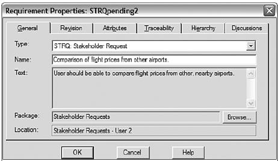
Рисунок 1.16 - Діалогове вікно Requirement Properties (Властивості Вимоги) : Основна закладка.
- виберіть strq (запити зацікавленої особи) як тип вимоги;
- якщо ви хочете настроїти атрибути, натисніть закладку attributes (атрибути).
Атрибути вимоги можуть бути також змінені з view (представлення) і з Explorer (Провідника). Кожна вимога включає префікс і числове значення. RequisitePro привласнює унікальний тег кожній створюваній вимозі. Тег вимоги - це його унікальний ідентифікатор. Префікси пов'язані з типами вимог.
Поки документ ще не збережений, теги відображаються із словом «pending»(очікуючі).
Після збереження документу, теги містять префікси з описом типу вимоги і впорядкованими номерами, як показано на рис 1.17.
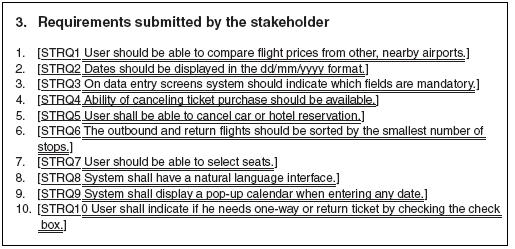
Рисунок 1.17 - Збережені вимоги
Вимоги можуть бути проглянуті у вікні Explorer (Провідника).
Коли Ви закінчите з першим документом Запитів Зацікавленої Особи, Ви можете створити подібні документи для інших зацікавлених осіб.
Додавання Вимог з Провідника. Якщо Ви вирішили, що проект не вимагає документів Запитів Зацікавленої Особи, але Вам потрібні вимоги типу STRQ (Запити Зацікавленої особи), Ви можете додати вимоги з view (представлення) або з Explore r(Провідника).
Створення Views (представлень) для аналізу вимог. Views (чи представлення) використовуються для відображення вимог, а також для управління вимогами, їх атрибутами і їх взаємовідносинами з іншими вимогами. Ви можете сортувати і фільтрувати вимоги, щоб отримати необхідний звіт. RequisitePro має три типи представлень :
- attribute matrix (матриця атрибутів);
- traceability matrix (матриця трасування);
- traceability tree (дерево трасування).
Створення матриці атрибутів. Після того, як Ви ввели вимоги усіх зацікавлених осіб в систему, створимо представлення, що показує запити усіх зацікавлених осіб. Для створення нового представлення, не включеного в шаблон, виконаєте наступні дії:
- натисніть правою кнопкою мишки на теці, де ви хочете створити представлення (тека «Stakeholders Requests» буде хорошим вибором в даному випадку), і виберіть New>View (Нове>Представлення). В якості альтернативи Ви можете виділити теку, де Ви хочете створити view, і вибрати File>New>View (Файл>Нове>Представлення). З'явиться діалогове вікно View Properties (Властивості Представлення);
- дайте назву представленню;
- виберіть view type (тип представлення - матриця атрибутів, матриця трасування або дерево трасування), в даному випадку - матриця атрибутів;
- виберіть row requirement type (тип вимоги в рядку) - в даному випадку strq (запити зацікавленої особи);
- якби ви створювали матрицю трасування, вам би також знадобилося б вибрати column requirement type (тип вимоги в стовпці).
Відкриття View (представлення). Багато представлень вже є у шаблонах проектів. Оскільки ми використали шаблон Use Case (сценаріїв використання), у нас вже є представлення All Stakeholders Requests (усі запити зацікавленої особи) в теці Stakeholders Requests. Нам потрібно лише відкрити представлення, виконавши наступні дії:
- відкрийте теку features and vision (функціональні особливості і концепція);
- подвійним клацанням мишки натисніть на представлення all features (усі властивості).
Матриця атрибутів відобразить усі вимоги певного типу з їх атрибутами. Це відображення в табличному виді з іменами вимог в рядках і атрибутів в стовпцях.
Щоб змінити набір атрибутів, що відображаються, виконаєте наступні дії:
- помістіть курсор на заголовок рядка на панелі представлення, натисніть правою кнопкою мишки і виберіть displayed attributes (атрибути, що відображаються);
- у списку displayed attributes (атрибути, що відображаються) виберіть атрибути, які ви хочете бачити на представленні, як показано на рис 1.18.
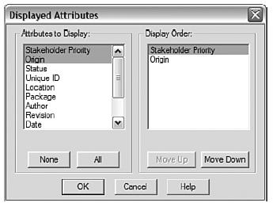
Рисунок 1.18 - Вибір атрибутів для відображення в матриці атрибутів
Оскільки в процесі створення вимог ми не встановили пріоритети, ми можемо зробити це зараз. Для зміни атрибутів вимоги виконаєте наступні дії:
- натисніть правою кнопкою мишки на відповідному осередку і виберіть set value (встановити значення);
- виберіть значення зі списку.
Щоб змінити Requirement Name (Назва Вимоги) або Text (Текст), натисніть правою кнопкою мишки на вимозі і виберіть Properties (Властивості).
Вимоги можуть бути створені прямо в Матриці атрибутів. Проте, не вважається хорошою практикою зберігати частину вимог одного і того ж типу в документах, а іншу частину тільки в уявленні. Ви можете змінювати вимоги незалежно від того як воно було створене. Якщо Ви міняєте текст вимоги в уявленні, ця зміна буде також відображена в документі.
Експорт Представлень (Views). Ми можемо експортувати представлення в документ Microsoft Word або в CSV- файл (який ми можемо відкрити за допомогою Microsoft Exсel). Це дозволяє використати цю інформацію поза середовищем Requisite Pro.
Для експорту тільки що створеної нами матриці атрибутів виконаєте наступні дії:
- виберіть file>export>export to csv (файл>експорт>експорт в csv);
- введіть назву файлу;
- натисніть кнопку save(зберегти).
Ви можете створювати запити для вимо г(на фільтрацію і сортування інформації) в Матриці атрибутів (Attribute Matrix). Щоб фільтрувати рядки, Ви можете вказати, яким критеріям повинні задовольняти рядки для відображення в матриці. Як приклад, відобразимо тільки вимоги, які мають пріоритет High (Високий) або Medium (Середній), а Origin (Джерело) вимоги - Користувача 1 або Користувача 2.
У діалоговому вікні Query Row Requirements (Запит до Вимог в Рядку) Ви також можете встановити Sort Order (Порядок Сортування) для вибираних атрибутів в Ascending (Висхідний) or Descending (Низхідний).
Ви можете зберегти результати запиту в уявленні. Представлення відображатиме стан на момент часу запиту. Щоб відобразити нещодавно зроблені зміни у базі даних, Вам необхідно вибрати View>Refresh (Представлення>Відновити).
Ми будемо використовувати наступний формат документу Специфікації сценаріїв використання (Use Case Specification) :
- brief description (короткий опис);
- basic flow (основний потік);
- alternative flows (альтернативний потік);
- 3.1 alternative flow 1 (альтернативний потік 1);
- 3.2 alternative flow 2 (альтернативний потік 2);
- special requirements (особливі вимоги);
- preconditions (передумови);
- postconditions (постумови);
- extension points (точки розширення);
- context diagram (контекстна діаграма);
- activity diagram (діаграма активності);
- state machine diagrams (діаграма станів);
- scenarios (сценарії, алгоритми).
Цей шаблон містить декілька відмінностей в порівнянні з шаблоном сценаріїв використання, включеним в RequisitePro :
Для створення документу Специфікації сценаріїв використання (Use Case Specification) в RequisitePro, Ви повинні виконати дії, аналогічні діям при створенні документу Вимог Зацікавлених Осіб (Stakeholder Request) і Концепції (Vision):
- у explorer (провіднику), виберіть теку use cases;
- виберіть file> new>document (файл>новий>документ);
- заповніть поля в діалоговому вікні document properties (властивості документу).
Для візуального представлення деяких кроків в документ можна включити екранні форми прототипу. Проте, призначення цих екранних форм - не дизайн призначеного для користувача інтерфейсу, а пояснення того, які об'єкти взаємодіють з дійовою особою. Екранна форма також може показувати зразкові значення для введення.
RequisitePro надає можливість установки ієрархії вимог. Це дуже зручно, особливо при структуризації вимог сценаріїв використання. Ви можете визначити кожен сценарій використання як батьківський і приєднати усі альтернативні потоки як дочірні вимоги. Для створення дочірньої вимоги виконаєте наступні дії:
- виділіть назву альтернативного потоку, як показано на рис 1.20;
- правою кнопкою мишки натисніть на назві і виберіть new requirement (нова вимога), або виберіть requisitepro>requirement>new (вимога>нове), або натисніть на іконку new requirement (нова вимога);
1) з'явиться діалогове вікно requirement properties (властивості вимоги);
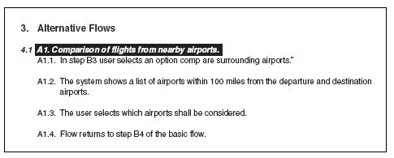
Рисунок 1.20 - Виділення тексту вимоги
1) виберіть закладку hierarchy (иехархия);
2) у списку parent (батьківський), виберіть «choose parent» («вибрати батьківський»);
3) з'явиться діалогове вікно parent requirement browser (огляд батьківської вимоги), виберіть батьківську вимогу.
Після збереження документу, RequisitePro призначає унікальний номер вимозі. У разі дочірньої вимоги номер складається з номера батьківської вимоги, точки і номера дочірньої вимоги. Ієрархія вимог може бути проглянута з Explorer (Провідника).
Залежно від того, наскільки точно Ви хочете відстежувати трасування (зв'язок) в RequisitePro, Ви можете ввести усі сценарії (алгоритми) в систему, або встановити трасування прямо з сценаріїв використання в тестові сценарії. Перевага введення сценаріїв - це надання детальнішого трасування. Недоліком є те, що це створює зайві витрати. Цей пункт використовує підхід введення усіх сценаріїв.
Сценарій не є стандартним типом вимог в RequisitePro, так що Вам необхідно додати його як новий тип вимог, виконуючи наступні дії:
- у explorer (провіднику), правою кнопкою мишки натисніть на проекті і виберіть properties (властивості);
- виберіть закладку requirements type (тип вимог);
- натисніть add (додати);
- заповніть відповідні поля:
1) name(назва): scenario;
2) requirement tag prefix (префікс вимоги) : може бути будь-яким, але краще якщо з сенсом, наприклад sc;
3) requirement color (колір вимоги) : залиште за умовчанням синій (blue) або виберіть інший;
4) requirement style (стиль вимог) : залиште за умовчанням подвійне Підкреслення (Double Underline) або виберіть інший.
Як і будь-які інші вимоги, ми можемо ввести додаткові вимоги в RequisitePro трьома різними способами.
Для додавання вимоги з Explorer (Провідника) виконаєте наступні дії:
- правою кнопкою мишки натисніть на теці supplementary requirements (додаткові вимоги) і виберіть new>requirement (нове>вимога);
- заповніть поля в діалоговому вікні requirement properties (властивості вимоги).
У деяких шаблонах представлення All Supplementary Requirements (Усі Додаткові Вимоги) вже створене. Якщо Ви працюєте з шаблоном, що не містить це за умовчанням представлення, виконаєте наступні дії для його створення:
- правою кнопкою мишки натисніть на теці supplementary requirements (додаткові вимоги) і виберіть new>view (нове>представлення);
- у діалоговому вікні view properties (властивості представлення), view type (тип представлення) має бути attribute matrix (матриця атрибутів), а row requirement type (тип вимоги в рядку) має бути supl.
Велика перевага третього підходу(створення Додаткової Специфікації - Supplementary Specification і потім додавання вимоги з документу) в тому, що ми можемо роздрукувати внутрішній документ і використати його в якості комунікацій із замовником. Іноді цей документ навіть використовується як частину контракту із замовником.
Для створення Додаткової Специфікації (чи, якщо Ви наслідуєте поточну конвенцію найменувань в RUP, Додаткових Специфікацій) виконаєте наступні дії:
- правою кнопкою мишки натисніть на теці supplementary requirements (додаткові вимоги) і виберіть new>document (новий>документ);
- заповніть поля в діалоговому вікні document properties (властивості документу).
Формат документу, запропонований шаблоном RUP:
- introduction (вступ):
1) purpose (призначення);
2) scope (сфера застосування);
3) definitions, acronyms, and abbreviations (визначення, акронимы і абревіатури);
4) references (посилання);
5) overview (огляд);
- functionality (функціональність)
- usability (зручність використання)
- reliability (надійність)
- performance (продуктивність)
- supportability (здатність до супроводу)
- design constraints (обмеження на дизайн)
- online user documentation and help system requirements (он-лайн документація користувача і вимоги до системи супроводи)
- purchased components (придбані компоненти)
- interfaces (інтерфейси):
1) user interfaces (інтерфейси користувача);
2) hardware interfaces (інтерфейси апаратного забезпечення);
3) software interfaces (інтерфейси програмного забезпечення);
4) communications (інтерфейси комунікацій);
- licensing requirements (вимога по ліцензіях);
- legal, copyright, and other notices (юридичні норми, авторське право і інші замітки);
- applicable standards (допустимі стандарти).